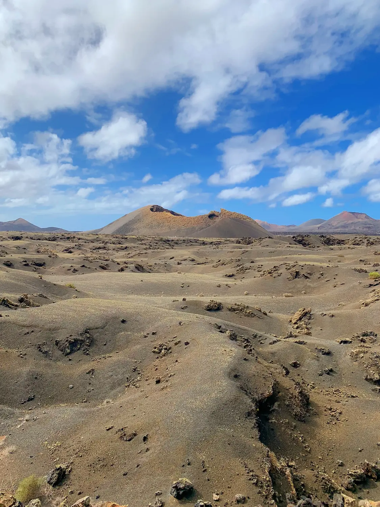
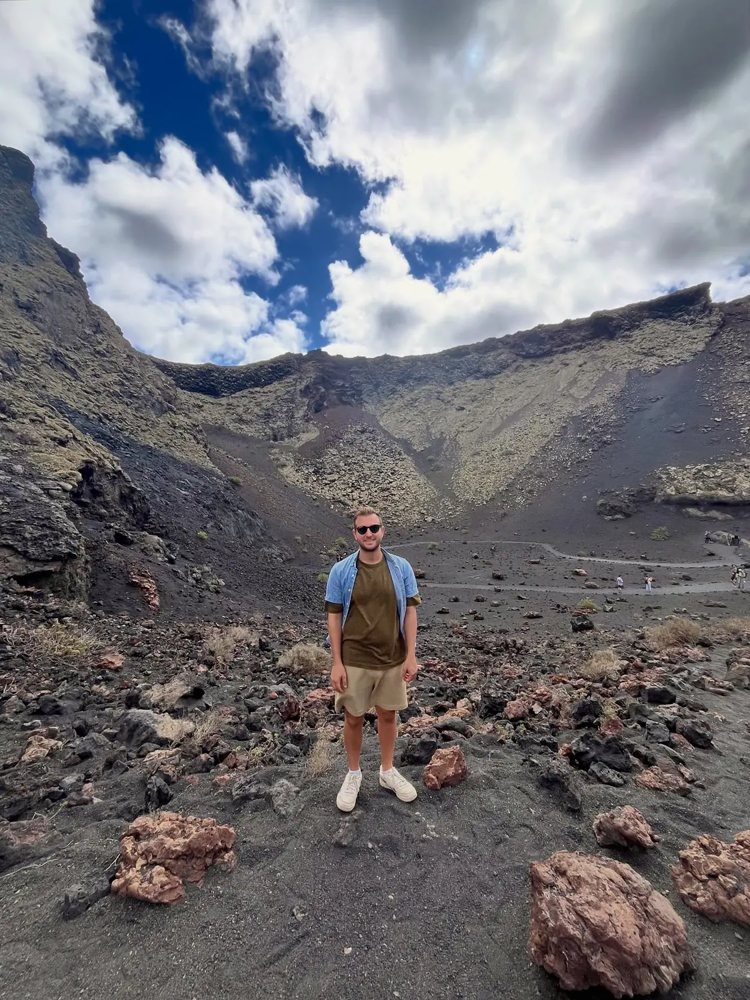

Lo mejor01
Timanfaya y las Montañas del Fuego
📍 Parque Nacional de Timanfaya · sur de Lanzarote
Esto es a lo que vienes. Timanfaya es un mar de campos de lava negra, conos ocres y cráteres que dejaron las erupciones del siglo XVIII: lo más parecido a pisar otro planeta que hemos vivido. El parque está protegido, así que la zona central se recorre en una ruta oficial en autobús, y hay tours guiados de medio día e incluso una ruta a pie por el paisaje volcánico. El parque nacional es imprescindible; no te lo saltes.
Parece MarteReserva el tour del parque
GetYourGuide
Te lo recomendamos
Montañas del Fuego en el sur de Lanzarote: tour de medio día
Ver disponibilidad →
GetYourGuide
Para senderistas